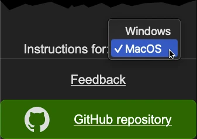
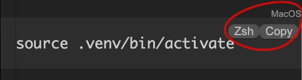
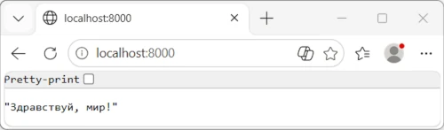
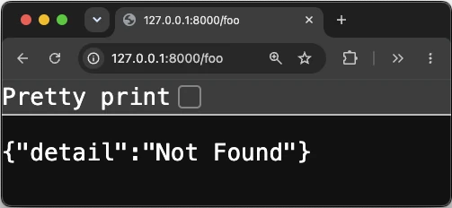
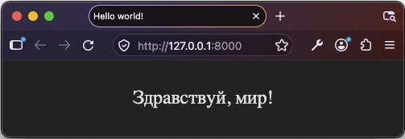
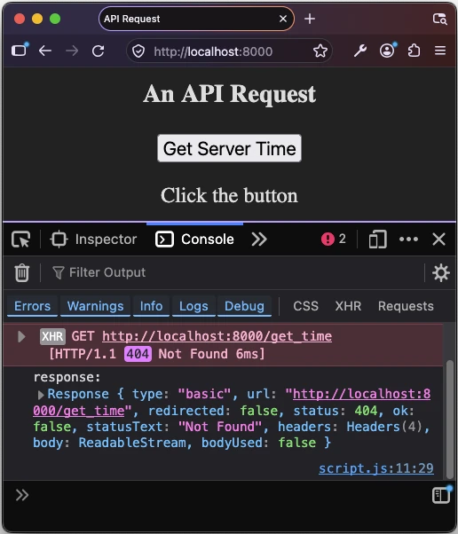
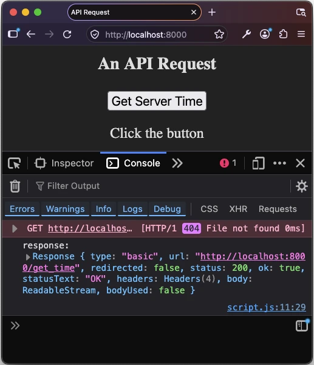
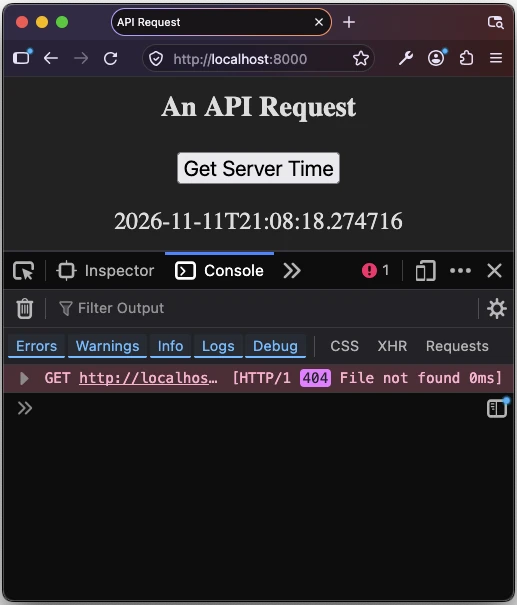

Python-and-PostgreSQL
A backend for a MeetUp-like web app
November 2026
Introduction
Demand is growing for developers who can use AI to convert a natural language request into valid SQL to query a database.
This tutorial is designed to help you build an “intelligent event assistant” for a web site similar to MeetUp.com. The ultimate goal is to allow end users to type a phrase like…
- “Find me a tech meetup next week that’s free.”
- “What events are happening near Jubilee metro station on Friday evening?”
- “Show me upcoming events about AI or databases.”
… and have the backend convert this into a query for a database, and respond with a useful answer.
It is written for someone who is comfortable with basic programming concepts and has used a database before, but has not yet built a web server.
A Two-Part Tutorial
This tutorial is in two parts:
- Create a backend that uses pre-defined queries for the database
- Add an AI layer that lets a Large Language Model create custom queries for the database.
Toolchain
In building this first part of the project, you will be using the following tools:
The Stack
- Python 3: a scripting language to develop a server
- FastAPI: a framework for communicating between a browser and the server
- Uvicorn: a server to run the Python script and reload it after any changes
- PostgreSQL: a database to hold data about users, groups and meetings
- A database driver (psycopg2-binary) that lets Python talk to PostgreSQL
The Tooling
These are the optional tools that I use during development:
- Postman (for testing)
- Git (for collaboration and version control)
- Virtual Studio Code (for editing code)
Teaching Approach
I do not assume that you have used any of these technologies before. I include detailed explanations of each concept in collapsible sections. If you are a beginner, you can open these and learn precisely what is happening at each step. If you are more advanced, you can skip over these collapsed sections.
Some collapsible sections contain deliberately broken versions of the code, with a challenge to diagnose the problem before reading the explanation. These are optional; the mainline code always works.
I am working on MacOS, and this will be visible from the screenshots. If you are working on a different operating system (such as Windows) some of the Terminal commands will be different from those shown in the screenshots. Choose your operating system from the pop-up menu in the sidebar, and always check that the code snippets match this.


Steps
This is what you will do as you work through this first part of the tutorial:
- Create a barebones Python server responds with “Hello World!”
- Adapt the server to return an HTML file that says “Hello World!”
- Modify the HTML file and see the change
- Add a button that shows an alert in the browser
- Make the button call the server; server responds with “Success!”
- Connect to PostgreSQL
- Design and create tables (users, groups, meetings)
- Insert dummy data (users, groups, meetings)
- Query the database from the server; return all users, then all meetings
- Add a form to query meetings by group or date; server returns filtered data
- Handle errors (empty form, invalid query)
- Register a user (form + server insert)
- Simplify “login”: store a user ID in a session/cookie, or hardcode a user for now
- Retrieve meetings for the logged-in user (join users → groups → meetings)
- Concept: validate AI-generated SQL before running it (only SELECT, allowed tables, no passwords)
Part Two
The second part of the tutorial will build on the work that you do here. In the second part, you will learn how to allow natural language input and convert it to SQL queries similar to those you already created manually.
By the end, you will have a working natural-language interface to your database, and you will understand how to validate AI-generated SQL before running it.
Setting up your Work Environment
You will need the following apps installed on your development computer in order to complete this tutorial. How you do this depends on your Operating System. Ensure that your Operating System is selected in the sidebar on the left.
Code Editor
You will need a code editor to create python, html and other scripts. A popular choice is Virtual Studio Code, which is free. You can download Virtual Studio Code here.
PowerShell
This tutorial assumes that you will be using PowerShell in your Windows Terminal in VS Code.
Here are the steps to switch to PowerShell, if you have been using a different shell:
- Open the Command Palette with
Ctrl + Shift + P. - Start typing
Terminal: Select Default Profileand select it. - Choose
PowerShell(or"Windows PowerShell") from the list that appears.
Python
You can download Python from the official website.

Choose the standalone installer, because this gives you the option of
checking the Add python.exe to PATH button before you click
Install Now.

This is important, because it allows you to run Python from the command line.

PostgreSQL
You can download PostgreSQL for Windows from the official website.
Python
You can download Python from the official website, or you can run:
brew install pythonAfter installation, you need to run a script to ensure Python 3 is recognized in your terminal:
- Navigate to the Applications folder.
- Find the Python 3.x folder.
- Right-click on Update Shell Profile.command and select “Open.” This will configure your terminal to recognize the python3 command.
To check that python3 is available on the command line,
run:
python3 --versionIf Python 3 is installed correctly, you should see the version number displayed.
PostgreSQL
To install PostgreSQL, and ensure that it is running, use the following commands:
brew install postgresql@16
brew services start postgresql@16Python
Python 3 is usually pre-installed. To make sure that you have the latest full version, run:
sudo apt update
sudo apt install -y python3-full
python3 --versionIf Python 3 is installed correctly, you should see the version number displayed.
You will also need pip for installing packages:
sudo apt install -y python3-pipOptional Tools
You might also like to install:
A Git repository containing the completed project will be available here (eventually).A Basic Python Server
A key feature of this project is that it provides an API (Application Programming Interface) that allows a browser to communicate with a server, and through it, with a database.
You can think of an API like the waiters in a restaurant. When you enter the restaurant, all the tables are arranged in public in a standard way. The kitchen is often invisible. A customer will talk to a waiter who will take the message into the kitchen, and, a short while later, the customer will receive the specific food that they ordered.
In a news page in a browser, for example, articles and images will be arranged in a standard way, but depending on what links the visitor chooses, the specific data in the page will change.
FastAPI
FastAPI is like a restaurant infrastructure. It is a framework that provides all the features that you need create a robust API, along with possibility to customize these features to your specific needs.
Before you can open a new restaurant, you must have a building, with an electricity supply, a gas supply, plumbing, and all the equipment like stoves and fridges that the staff will need.
Before you can use FastAPI, you must have something similar. Fortunately, installing the structure for FastAPI is much faster than building a restaurant, and it is cost-free.
A Virtual Environment for FastAPI
Here’s how to get started, with an ultra-simple Python server. In a Terminal window, in the directory where you want to create your project, run the following commands:
mkdir event_assistant
cd event_assistant
python3 -m venv .venvThe line python3 -m venv .venv will create a directory
called .venv (for Virtual ENVironment) in your
event_assistant project directory.
The dot (.) as the first character of the name will make the
.venv folder invisible. This is the convention, but you can
ignore it. Even the name .venv is a convention: you could
call it “george”, and use “george” instead of .venv
everywhere, but your colleagues will not appreciate this.
Contents of .venv
./
└── .venv/
├── .gitignore
├── bin/
│ ├── activate
│ ├── activate.csh
│ ├── activate.fish
│ ├── Activate.ps1
│ ├── pip*
│ ├── pip3*
│ ├── pip3.15*
│ ├── python -> python3.15*
│ ├── python3 -> python3.15*
│ └── python3.15 -> /Library/Frameworks/Python.framework/Versions/3.15/bin/python3.15*
├── include/
├── lib/
│ └── python3.15/
└── pyvenv.cfgDiscovering the Global Environment
Currently, if you run the command…
which python3… the output will be something like:
/Library/Frameworks/Python.framework/Versions/3.15/bin/python3And if you run the command…
which python… the output is likely to be:
python not foundwhich python… the output will be something like:
/c/Users/james/AppData/Local/Microsoft/WindowsApps/pythonActivitating a Virtual Environment
The following command activates a virtual environment:
source .venv/bin/activateNow, if you run the command…
which python3… the output will be something like:
/Users/full/path/to/event_assistant/.venv/bin/python3And:
which python… will show something like:
/Users/full/path/to/event_assistant/.venv/bin/python.venv/Scripts/Activate.pslTroubleshooting
If you see an error message like…
File C:\Users\james\Documents\event_assistant\.venv\Scripts\Activate.ps1 cannot be loaded because running scripts is disabled on this system.… don’t worry. PowerShell’s default execution policy blocks scripts
(including the Activate.ps1 file) from running to protect
you from malicious code.
To tell PowerShell that you know what you are doing, run this command once:
Set-ExecutionPolicy -Scope CurrentUser -ExecutionPolicy RemoteSignedThis allows locally created scripts (like the venv activation script) to run. Simply run the command…
.venv/Scripts/Activate.psl… again after you run the Set-ExecutionPolicy...
command, and all should be good.
Now if you run the command …
which python… you should see something like:
/c/Users/full/path/to/event_assistant/.venv/Scripts/pythonIn other words, now that you have activated the virtual environment, python and pip commands point to the copies inside .venv, instead of the system-wide ones. This is important, because different projects may require different versions of the same custom package.
Your next step is to use pip, the Python package
manager, to install FastAPI locally. If you did not use a virtual
environment for all your projects, you would be forced to use the same
globally installed version in all your other projects, too.
Installing FastAPI in the Virtual Environment
Run the following command to install FastAPI with the standard extras that it needs to operate:
pip install "fastapi[standard]"$env:PYYAML_FORCE_LIBYAML="0"
pip install "fastapi[standard]"You should see a rush of text in the Terminal window as
pip downloads the files needed by FastAPI. These will
appear in your .venv directory.
Updated contents of .venv
./
└── .venv/
├── .gitignore
├── bin/
│ ├── activate
│ ├── activate.csh
│ ├── activate.fish
│ ├── Activate.ps1
│ ├── agent-detector*
│ ├── detect-installer-test*
│ ├── dotenv*
│ ├── email_validator*
│ ├── fastapi*
│ ├── httpx*
│ ├── httpx2*
│ ├── idna*
│ ├── markdown-it*
│ ├── normalizer*
│ ├── pip*
│ ├── pip3*
│ ├── pip3.15*
│ ├── pygmentize*
│ ├── python -> python3.15*
│ ├── python3 -> python3.15*
│ ├── python3.15 -> /Library/Frameworks/Python.framework/Versions/3.15/bin/python3.15*
│ ├── typer*
│ ├── uvicorn*
│ ├── watchfiles*
│ └── websockets*
├── include/
├── lib/
│ └── python3.15/
└── pyvenv.cfgWith all this infrastructure in place, it’s time to cook a first simple meal.
A Simple Hello World Server
Below is the Python code for a FastAPI server that responds to requests for the root path with “Hello World!” (in Russian, to check how browsers will handle Unicode).
Create a file called main.py inside your
event_assistant project directory, and give it the
following script:
# Import FastAPI class from the fastapi package
from fastapi import FastAPI
# Create an instance of the FastAPI app
app = FastAPI()
# Define a GET route for the root URL ("/")
@app.get("/")
async def read_root() -> str:
# Return a plain text response
return "Здравствуй, мир!"To launch this simple server, run the command:
fastapi dev main.pyYou should see the following output (and more) in the Terminal:
⚡️ Starting FastAPI in development mode
🐍 Using import string: main:app
🌐 Server started at http://127.0.0.1:8000
Documentation at http://127.0.0.1:8000/docsViewing the Response in your browser
Command-click on the link to http://127.0.0.1:8000. Your favourite browser should open to show the server’s response to the request.



Why the Browsers Disagree
The response from the server is a short string of plain text. It is
not in HTML format. Chrome, Firefox and Edge guess (correctly) that the
string is in UTF-8 format. Safari makes a different guess:
that it is in Windows-1252.
Fixing the Issue Live
You could hide the problem, à la Potemkin
village, by replacing the Cyrillic text with Latin characters. That
would not be a solution, but it will show the power of FastAPI. Edit
your main.py file as follows:
# Import FastAPI class from the fastapi package
from fastapi import FastAPI
# Create an instance of the FastAPI app
app = FastAPI()
# Define a GET route for the root URL ("/")
@app.get("/")
async def read_root() -> str:
# Return a plain text response
return "Hello world!"Now, refresh your browser page. You should immediately see the text “Hello world!” appear in your browser.
Your change doesn’t fix the encoding problem. It sidesteps it, because ‘Hello world!’ is pure ASCII, and every browser agrees on ASCII. The Unicode problem is still there, waiting for the next non-Latin string.
What this does demonstrate is something useful. Remark that you did
not stop and restart the server. FastAPI did this for you as soon
automatically as it noticed a change to main.py. That saves
you time.
What happens if you include a pathname in the URL?
Try visiting [http://127.0.0.1:8000/foo]. What happens(http://127.0.0.1:8000/foo). What happens?

The line…
@app.get("/")… ensures that the following command…
async def read_root() -> str:
# Return a plain text response
return "Hello world!"… applies specifically to a request for the root URL
(/), and no other. For now, your server has no instructions
about what to do for any other request, so it responds with the JSON
string: '{ "detail": "Not Found" }'.
A major theme in this tutorial is how to handle many different requests, including unexpected ones. So a full solution for this issue is coming.
A note about __pycache__
You may notice that a directory named __pycache__/,
containing a file named main.cpython-315.pyc, appeared at
the root of your event_assistant project folder, after you
ran…
fastapi dev main.pyThe __pycache__ directory is where Python caches
compiled versions of your code to start faster next time. You
can safely ignore this folder. If you delete it, it will be
recreated automatically next time the server starts.
If you are using Git, you should make sure Git ignores it too, by
adding __pycache__ to your .gitignore
file.
What You’ve Just Learned
In this section, you have:
- Created a virtual environment for running your Python project
- Installed a number of dependencies, including
FastAPI, so that they are available for Python to use locally - Created a barebones server that proves that it is working by
responding with a string when the root path (
/) is requested - Noted that different browsers may treat the response differently
- Noted that requests for paths other than
/are treated as “Not Found” - Discovered that FastAPI will restart your server automatically after you make a change
- Discovered that it is important to try to break your project, so that you fix it before others start to use it.
In the next section, you’ll see how to make the server respond to a
request with an HTML page, complete with an entry for
<meta charset="UTF-8">, so that all browsers will
know how to treat the Unicode text.
Responding with HTML
FastAPI is designed first and foremost to handle API requests, where
a client asks the server to respond with dynamic data, in JSON format,
based on a specific query. It can also serve static files, like an
index.html page. And an index.html can make
the ideal client for testing the API.
In this section, you will be creating a simple
index.html page and a style sheet for it, and using your
existing server to deliver this.
The focus of this tutorial is on the API, so I will keep the frontend
index.html as simple as possible.
A Simple index.html
files
- Create a folder called
public/at the root of yourevent_assistantproject folder. - Inside the
public/folder, create a file calledindex.html - Give it the following script:
<!DOCTYPE html>
<html lang="en">
<head>
<meta charset="UTF-8">
<meta
name="viewport"
content="width=device-width, initial-scale=1.0"
>
<link rel="stylesheet" href="assets/styles.css">
<title>Hello world!</title>
</head>
<body>
Здравствуй, мир!
</body>
</html>- Create a subfolder called
assets/inside thepublicfolder. - Inside the
assets/folder, create a file namedstyles.css. - Give it the following script:
body {
height: 100vh;
margin: 0;
display: flex;
justify-content: center;
align-items: center;
color: #ddd;
background-color: #222;
}File Hierarchy
This is what your exent_assistant project folder should
look like now:
.
├── __pycache__
│ └── main.cpython-315.pyc
├── .venv/
├── main.py
└── public
├── assets
│ └── styles.css
└── index.htmlUpdating main.py
Each dish that you cook requires its own tools and utensils. A well-stocked kitchen cupboard will provide these for you.
When you add a new feature to a Python project, you often need to use
new tools. These can be stored in Python itself (as is the case for
pathlib below), or in one of the dependencies that you have
included. Here, you will be using fastapi.staticfiles to
define a directory from which your server can serve pre-built files,
like the index.html and styles.css files that
you have just made.
- Make the following changes to the
main.pyscript:
from fastapi import FastAPI
# Prepare to serve static files from a specific folder
from fastapi.staticfiles import StaticFiles
from pathlib import Path>
# Create an instance of the FastAPI app
app = FastAPI()
# Ensure that a request for "/" serves up "public/index.html"
app.mount("/", StaticFiles(directory=Path("public"), html=True))- If your server is not running, restart it with:
fastapi dev main.py(Normally, fastapi should have restarted it for
you.)
- In your browser, visit http://127.0.0.1:8000.

Setting the charset
Even in Safari, the Unicode text will be displayed correctly. This is
because the index.html file contains this tag:
<meta charset="UTF-8">This tells any browser that the text in the index.html
file is to be treated an UTF-8
What You’ve Just Learned
You have seen how to get your server to deliver an HTML page, and the
files that this HTML page needs to load, using
fastapi.staticfiles.
Now you are ready to modify index.html so that it sends
an API request to your server. This is what you will do in the next
section.
Making an API Request from a Client Page
In this section, you’ll make changes to both your new
index.html page and your main.py server
script, so that you can ask the server to tell you the time. You’ll
start by adding a button to index.html.
- Make the following changes to the
index.htmlfile, to add a button and way to show the response to a click on the button:
<!DOCTYPE html>
<html lang="en">
<head>
<meta charset="UTF-8">
<meta
name="viewport"
content="width=device-width, initial-scale=1.0"
>
<link rel="stylesheet" href="assets/styles.css">
<script defer src="assets/script.js"></script>
<title>API Request</title>
</head>
<body>
<h3>An API Request</h3>
<button
type="button"
id="get-time"
>
Get Server Time
</button>
<p id="time">
Click the button
</p>
</body>
</html>- Inside the
public/assets/folder, create a file calledscripts.js - Give it the following script:
const button = document.getElementById("get-time")
const time = document.getElementById("time")
const endpoint = "/get_time"
button.addEventListener("click", getTime)
function getTime(params) {
fetch(endpoint)
.then(response => console.log("response:", response))
}Notice that this script is read in by the index.html
page, in line 6:
<script defer src="assets/script.js"></script>The defer attribute means: wait until the browser has
created all the HTML elements before running the script. This ensures
that the Get Server Time button exists before the script tries to
manipulate it.
A click on the Get Server Time button will send a request for
/get-time in the server script… but the server script is
not yet ready to respond to this.
- Refresh your browser page.
- Click on the button.
- Open the Developer Tools of your browser at the Console tab.

What’s (Not) Happening
In public/assets/script.js , the fetch
command…
fetch(endpoint)… tells the browser to make a request to the server for the endpoint
/get_time. This is an asynchronous process. It may take the
server some time to respond, so the line…
.then(response => console.log("response:", response))… waits for the response before it executes.
However, the server does not know how to respond, because you have
not yet told it what to do when it receives a request for anything other
than the root (/) path. As a result, the server responds
with a JSON string, including status: 404,
ok: false and statusText: "Not Found".
This is not what you want, but it is what your code asked for, and what is logged to your browser console.
Getting the Server to Respond to the Request
To get main.py to respond correctly to this new request,
you need to make some changes. In particular, you are going to need to
use a new tool — the datatime class — which is part of the
core of Python.
- Make the following changes to
main.py:
from fastapi import FastAPI
# Prepare to serve static files from a specific folder
from fastapi.staticfiles import StaticFiles
from pathlib import Path
# Import a function to handle time
from datetime import datetime
# Create an instance of the FastAPI app
app = FastAPI()
# Respond to a request for "/get_time" with the time on the server
@app.get("/get_time")
async def get_time():
return {"time": datetime.now().isoformat()}
# Ensure that a request for "/" serves up "public/index.html"
app.mount("/", StaticFiles(directory=Path("public"), html=True))FastAPI should restart the server for you automatically.
- Click on the Get Server Time button again, and observe how the response shown in the browser Console has changed.

Understanding the Server’s Response
After the changes you made to main.py, the server
does know how to handle a request for /get_time.
As you can see status is now 200,
ok is true and statusText is
"OK". But where is the time?
You’ll notice that the response includes
body: ReadableStream.
When you make a request from a server, the response can be as short
as “ok”, or it may be live-streamed video, whose length cannot yet be
known. In both cases, the server will wrap its response in a
ReadableStream which the client can unpack, bit by bit, as
it becomes available.
In this case, the body contains the JSON string
{"time": <time string in isoformat>}, but this has to
be unwrapped before it can be used.
Treating the Response in the Client
Here’s how to extract the JSON object from the body of the response message.
- Make the following changes to the file at
public/assets/script.js:
const button = document.getElementById("get-time")
const watch = document.getElementById("watch")
const endpoint = "/get_time"
button.addEventListener("click", getTime)
function getTime(params) {
fetch(endpoint)
.then(response => response.json())
.then(displayServerTime)
}
function displayServerTime({ time }) {
watch.textContent = time
}- Click the Get Server Time button again and see the value that is displayed.

What You’ve Just Learned
In this section, you have:
- Edited your
index.htmlfile so that it displays a button and a field to show text. - Attached a script to the
index.htmlpage, to make the button active, and to display the result of its action. - Update
main.pyso that it responds to a request for a specific pathname. - Seen the importance of progressing step by step, checking at each stage the results of your changes.
You now have a server that can respond dynamically to a specific request.
In the next section, you will take a step to the side, to see how Python can connect to a PostgreSQL database. In the section after that, you will use your new knowledge to get your server to respond to a request for data from the database.